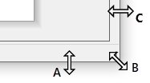
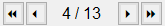

")
")
 /
/ 
Vorschau und Ausgabe der generierten Stahllisten in verschiedene Dateiformate oder auf der Zeichnung.
·In dieser Übersicht werden die Listentypen angezeigt, die im Dialog Stahlliste unter Ausgabe (Drucker) ausgewählt worden sind.
·In der Vorschau werden alle Linien und Texte mit einer konstanten Breite dargestellt. Beim Ausdrucken wird dann die tatsächlich voreingestellte Breite berücksichtigt. Die farbige Darstellung der Stiftnummern bleibt erhalten.

|
Tipp:
|
|
Spezifische Angaben auf der Stahlliste und die Darstellung der Elemente sind unter [Stahlliste | Grundwerte → Grundwerte Allgemein] einstellbar.
|
Darstellungsfehler bei Biegeformen:
Die folgende Meldung erscheint, wenn in den Biegelisten-Einstellungen Parameter eingestellt sind, mit denen eine Biegeform nicht einwandfrei skaliert und in der Tabellenzeile dargestellt werden kann. Zum Beispiel wurden zu große Textgrößen für Überschriften oder eine zu große Beschriftungsgröße für Teillängen gewählt, sodass es bei der Beschriftung zu Überschneidungen kommt. In diesem Fall wird die Biegeform unskaliert aus der Zeichnung übernommen, wobei der Darstellungsfehler weiterhin besteht. Es werden lediglich die Schriftfarben für Teillängentexte und Vermaßungen an die Biegelisten-Einstellungen angepasst.
In der Meldung erhalten Sie eine Auflistung der betroffenen Positionen. Klicken Sie auf OK, um die Stahlliste zu generieren. Sehen Sie sich die Darstellung der betroffenen Positionen an und passen Sie anschließend in den Biegelisten-Einstellungen die notwendigen Parameter an.
Optionen im Dialog "Ansicht"
Fenstergröße anpassen
Um den Vorschaubereich anzupassen, fahren Sie mit dem Cursor an einen beliebigen Rand- oder Eckbereich des Dialogs. Ziehen Sie mit gedrückter Maustaste das Dialogfenster zusammen oder auseinander.

A. vertikales Anpassen; B. vertikales und horizontales Anpassen; C. horizontales Anpassen
|
Menüleiste

|
Drucken
Öffnet den Dialog Druckparameter.
Drucker
Name
Auswahl eines Druckers oder eines Druckertreibers für die Ausgabe.
|
Exemplare
Anzahl Exemplare
Stellen Sie die Anzahl ein. Sie können die Zahl direkt eintippen oder durch die Pfeiltasten herauf- bzw. herabsetzen.
|
Erweiterte Einstellungen für den eDocPrinter PDF Pro GLASER:
Die Stahlliste der aktuellen Zeichnung ausgeben oder mehrere hinzugefügte Stahllisten in einer oder jeweils in einzelnen PDF-Dateien ausgeben. Es stehen zusätzliche Speicheroptionen zur Verfügung. Für die Druckausgabe werden die Voreinstellungen aus dem Dialog PDF-Parameter verwendet.
Für die getrennte Ausgabe mehrerer Stahllisten muss im Ansicht-Dialog die Sortierung nach Plänen aktiviert sein.
getrennte Stahllisten
Diese Option kann aktiviert werden, wenn mehrere Stahllisten ausgegeben werden oder wenn bei der Ausgabe der aktuellen Stahlliste der Listentyp Gesamtliste im Stahllisten-Dialog aktiviert ist.
 getrennte Stahllisten getrennte Stahllisten
|
Gewählte Stahllisten werden jeweils in einzelnen PDF-Dateien ausgegeben.
|
 getrennte Stahllisten getrennte Stahllisten
|
Gewählte Stahllisten werden in einer PDF-Datei ausgegeben.
Die Gesamtliste wird bei dieser Option nicht ausgegeben.
|
mit Gesamtstahlliste
Diese Option kann aktiviert werden, wenn im Stahllisten-Dialog der Listentyp Gesamtliste aktiviert ist und bei getrennte Stahllisten ein Haken gesetzt ist.
mit Gesamtstahlliste
|
Die Gesamtstahlliste wird in einer separaten Datei mit ausgegeben.
|
mit Gesamtstahlliste
|
Die Gesamtstahlliste wird nicht ausgegeben.
|
Automatischer Dateipfad/-name
Die PDF-Datei(en) werden automatisch im gleichen Speicherpfad und mit dem Dateinamen der AKT-Zeichnung(en) erstellt.
Der Dialog PDF-Datei speichern als wird geöffnet, wenn
·zusätzlich eine Gesamtstahlliste ausgegeben wird. In diesem Fall werden Speicherort und Dateiname für die Gesamtstahlliste abgefragt.
·mehrere Stahllisten ausgegeben werden und der Haken bei getrennte Stahllisten nicht gesetzt ist.
·bei der Option "Speichern unter"-Dialog anzeigen ein Haken gesetzt ist.
Ansonsten werden die PDF-Dateien ohne Abfrage des Speicherpfads und Dateinamens erzeugt.

Öffnet den Dialog PDF - Speicherort.

Pfad
Geben Sie einen Dateipfad an, in dem PDF-Dateien gespeichert werden sollen. Der dynamische Makrotext {Directory} entspricht dem Dateipfad der Zeichnung(en).
Öffnet den Dialog Ordner auswählen. Wählen Sie das gewünschte Verzeichnis aus und bestätigen Sie mit OK.
PDF - Dateiname
Der dynamische Makrotext {Filename} entspricht dem Speichernamen der auszugebenden Zeichnung(en). Sie können ihn mit weiteren Makrotexten und festen Texten kombinieren.
Ein Beispiel: Tragen Sie {Filename}_Stahlliste ein, um an den Dateinamen das Wort "Stahlliste" anzuhängen. Dadurch können Sie zwischen der Ausgabe der Stahlliste(n) und Zeichnung(en) unterscheiden.
Vorschau
Zeigt eine Vorschau des vollständigen Dateipfades inklusive des Dateinamens der Stahlliste an.

Öffnet eine Liste mit dynamischen Makrotexten:
·Today - aktuelles Datum
·Save Date - letztes Speicherdatum
·Create Date - Erstellungsdatum
·Filename - Dateiname
·Directory (nur bei Pfad verfügbar) - Dateiverzeichnis
Sie können die Formatierung von Datumsangaben bearbeiten. Siehe: Dynamische Makrotexte (Referenz).
Zurücksetzen
Setzt den Pfad auf {Directory} und PDF - Dateiname auf {Filename} zurück.
OK
Übernimmt die Einstellungen und schließt den Dialog.
Abbrechen
Setzt alle Änderungen zurück und schließt den Dialog.
|
"Speichern unter"-Dialog anzeigen
Setzen Sie hier einen Haken, wenn bei der PDF-Ausgabe der Speicherort und Dateiname immer abgefragt werden sollen. Standardmäßig wird der Speicherort der Zeichnung und der Dateiname vorgeschlagen. Falls die Zeichnung noch nicht gespeichert wurde, lautet der Vorschlag "Unbekannt.pdf".
Ohne gesetzten Haken erfolgt die Ausgabe automatisch gemäß den Einstellungen im Dialog PDF - Speicherort, wenn die Option Automatischer Dateipfad/-name aktiviert ist.

|
Hinweise:
|
|
·Wenn die Optionen Automatischer Dateipfad/-name und "Speichern unter"- Dialog anzeigen nicht aktiviert sind, werden PDF-Dateien im Benutzerordner Dokumente gespeichert:
C:\Users\Benutzername\Dokumente.
·Ist in den Druckereinstellungen des eDocPrinter PDF Pro GLASER (Dialog: Eigenschaften von eDocPrinter Pro GLASER; Registerkarte: Speichern) ein Standardverzeichnis festgelegt, erfolgt die Ausgabe in dieses Verzeichnis. Die Pfadangabe im Dialog PDF - Speicherort wird in diesem Fall ignoriert. Um einen Dateipfad im Dialog PDF - Speicherort festlegen zu können, müssen Sie zunächst das Standardverzeichnis aus den eDocPrinter-Einstellungen entfernen, indem Sie es aus der Eingabe löschen und den Dialog mit OK bestätigen.
·In den Druckereinstellungen des eDocPrinter PDF Pro GLASER (Dialog: Eigenschaften von eDocPrinter Pro GLASER; Registerkarte: Speichern; Option: Wenn Datei existiert) können Sie angeben, was bei bereits existierenden Dateien geschehen soll. Dateien können beispielsweise direkt ersetzt oder auch bei jeder Ausgabe automatisch nummeriert werden. |
Siehe auch: Stahllisten mit dem eDocPrinter ausgeben
Konformität
Wählen Sie die PDF-Konformitätsebene aus, mit der die PDF-Ausgabe erfolgen soll:
·Normal (keine Konformität)
·PDF/A-1a
·PDF/A-1b
·PDF/A-2a
·PDF/A-2b
·PDF/A-2u
·PDF/A-3a
·PDF/A-3b
·PDF/A-3u
Die Formate ZUGFeRD und Factur-X sind elektronische Rechnungsdatenformate für den Austausch von Rechnungen. Für die Ausgabe von ISBCAD-Daten haben diese Formate keine Bedeutung.
|
Hinweis:
|
|
Die Konformitätsebenen PDF/A-2 und PDF/A-3 sind ab der eDocPrinter PDF Pro Version 9.77 verfügbar, die ab ISBCAD 2025 ausgeliefert wird.
Weitere Informationen finden Sie auf der Website der GLASER Programmsysteme GmbH.
|
|
Ausgabe in Datei
Es wird eine Plotdatei (*.PLT) geschrieben. Im Dialog Datei speichern können Sie einen Ordner wählen und den Dateinamen eingeben. Wenn Sie auf Speichern klicken, wird die Datei geschrieben, der Dialog geschlossen und zur Ansichtsseite zurückgekehrt.
Eigenschaften
Öffnet den Dialog Eigenschaften des gewählten Druckers.
Weiter
Die Stahlliste wird mit den gewählten Parametern gedruckt oder es folgt der Dialog Speichern unter für die Ausgabe als PDF.
Abbrechen
Bricht die Aktion ab und scließt den Dialog.
|

|
Zeichenprogramm
Legt die Stahlliste in den Zwischenspeicher und schließt den Dialog. Klicken Sie im Dialog Stahlliste auf Ende, um die Stahlliste auf der Zeichnung abzulegen.
|
|
|
Wenn bereits eine Stahlliste auf der Zeichnung abgelegt ist, können Listen über den Ansicht-Dialog der Funktion [Option | StlLis | ausgeben] nicht auf der Zeichnung abgelegt werden. Um in der Zeichnung liegende Listen zu aktualisieren, nutzen Sie die Funktion [Option | StlLis | Neu erzeugen | Stahlliste (Dialog) → Ansicht].
|
|
|
Speichern
Die aktuelle Seite bzw. alle Seiten werden gespeichert.
Im Auswahlfeld Dateityp: können Sie folgende Dateiformate wählen:
·ISBCAD Zeichnungsdatei (*.akt)
·Plotdatei (*.plt)
·Enhanced Meta File (*.emf)
·Richtextdatei (*.rtf)
·Textdatei für Excel (*.txt)
·Excel-Datei (*.xlsx) - Auswahl nur verfügbar, wenn Excel auf dem PC installiert ist.
Beim Schreiben der Datei wird der Dateiname der AKT-Zeichnung für die Bezeichnung des Excel-Blatts genommen. Die Bezeichnung auf einem Excel-Blatt wird auf max. 20 Zeichen begrenzt.
·Adobe (*.pdf) |
|
|
Aktuelle Seite
Nur die aktuelle Seite wird ausgegeben.
|
|
|
Alle Seiten
Es werden alle Seiten ausgegeben.
|
|
|
Anschrift
Öffnet den Dialog Anschriften. Wählen Sie die Anschrift für den Briefkopf und klicken Sie auf Weiter. Der Ansichts-Dialog wird anschließend geschlossen. Wenn Sie den Dialog erneut öffnen, wird die gewählte Anschrift angezeigt.
|
|
|
Sortierung nach Plänen
Bei Ausführung einer Gesamtstahlliste, werden die Seiten nach den Plänen sortiert.
(B1-Stahlliste, B1-Biegeliste, B1-Schneideskizze, B2-Stahlliste, B2-Biegeliste, B2-Schneideskizze … usw.)
|
|
|
Sortierung nach Listentyp
Die Seiten werden nach Listentypen sortiert. Zuerst die Stahllisten, dann die Biegelisten und zum Schluss die Schneideskizzen.
|
|
|
Ganze Seite
Setzt in der Seiten-Ansicht und Zeichnungs-Ansicht nach dem Zoomen die Zoomstufe auf 100% zurück. Die aktuelle Zoomstufe wird links unten im Dialog-Fenster angezeigt (nur Seiten-Ansicht).
|
|
|
Zoom verkleinern
Zoomt schrittweise heraus. Nutzen Sie alternativ das Scrollrad Ihrer Maus.
|
|
|
Zoom vergrößern
Zoomt schrittweise heran. Nutzen Sie alternativ das Scrollrad Ihrer Maus.
|
|
|
Seiten-Ansicht
Zeigt die in der Seitennavigation  gewählte Seite an. Der zugehörige Listentyp (z. B. Biegeliste) wird unter der Menüleiste im oberen linken Fensterbereich angezeigt.
|
|
|
Zeichnungs-Ansicht
Zeigt alle Seiten je nach gewählter Sortierung (Plan/Listentyp) an. Dies ist eine Vorschau der Stahlliste, wie sie auf der Zeichnung abgelegt wird (s. Zeichenprogramm).
·Sie können eine Seite fokussieren, indem Sie im Ansichtsbereich einen Doppelklick auf die Seite ausführen. Alternativ können Sie die Seitennavigation zum Durchblättern der Seiten verwenden.
·Sie können die Aufteilung der Seiten im Unterdialog Allgemein anpassen. Das nachträgliche Verschieben einzelner Seiten ist mit [Konst 1 | Versch] möglich.
·Details der einzelnen Listen können mittels Mausgesten betrachtet werden. |
|
|
Seitennavigation
Um eine Seite gezielt anzugeben, führen Sie einen Doppelklick auf der Seitenangabe [aktuelle Seite/Seiten gesamt] aus, tragen die gewünschte Seitenzahl ein und beenden mit der Eingabetaste.
|
|
Zur ersten Seite
|
|
|
Eine Seite zurück
|
|
|
Eine Seite weiter
|
|
|
Zur letzten Seite
|
|

|
Schließt den Dialog und kehrt zum Dialog Stahlliste zurück.
|
Zugehörige Aufgaben:
·Stahllisten erzeugen
·Stahllisten mit dem eDocPrinter ausgeben
Zugehörige Referenzen:
·Stahlliste (Dialog)
Siehe auch:
·Stahlliste direkt ausgeben
·Stahllistenvorlage erzeugen